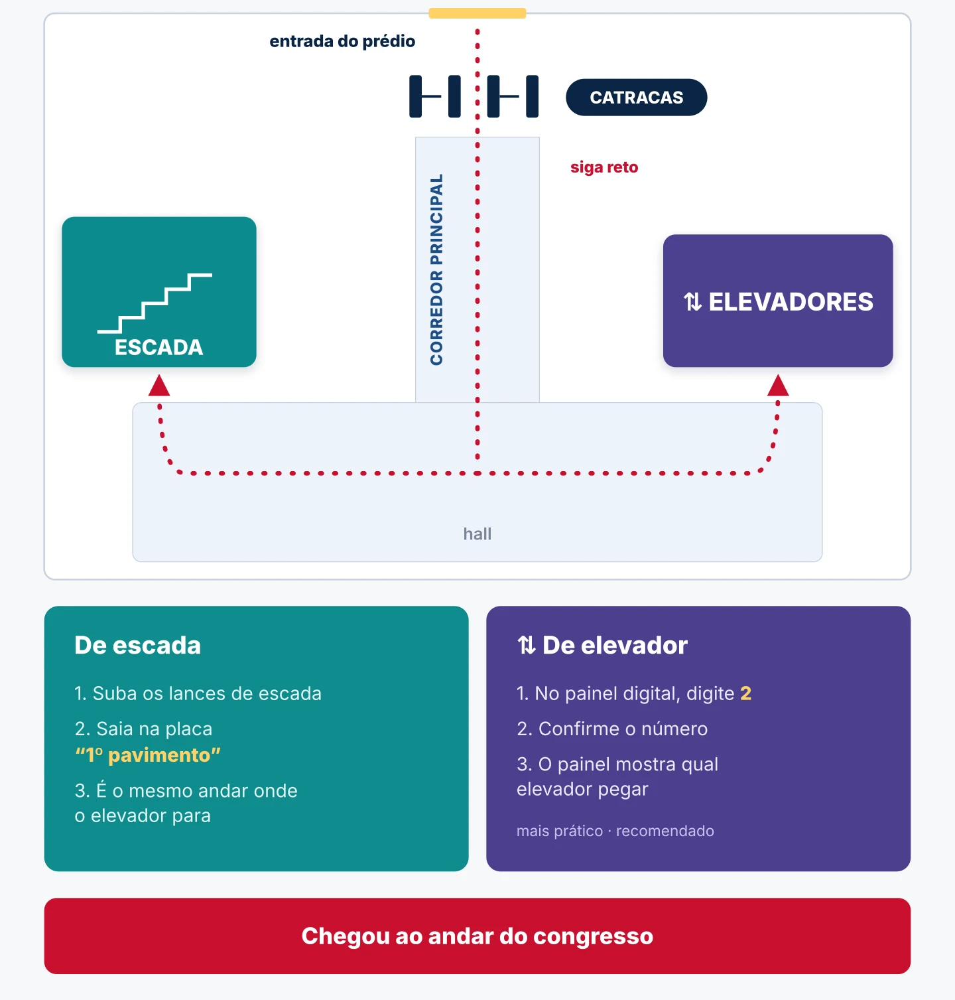
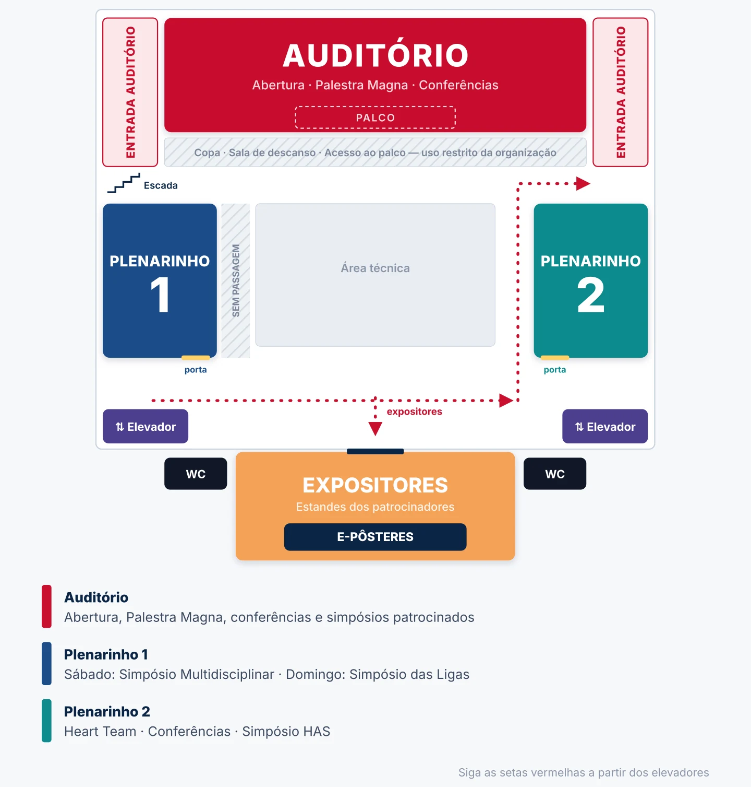

XI Congresso Rondoniense de Cardiologia
Como chegar às salas
Do térreo da Assembleia Legislativa de Rondônia ao 2º andar, onde ficam o Auditório, os Plenarinhos 1 e 2 e a área de expositores.
Prefere ver o caminho em vídeo?
▶ Assistir ao vídeo →Vídeo da LICAR (@licar_ro) em parceria com a SOCERON
1 Do prédio ao elevador
Ao entrar no prédio, passe pelas catracas e siga reto pelo corredor principal até o hall, onde ficam os elevadores e a escada.

⇅ De elevador
- No painel digital, digite 2
- Confirme o número
- O painel mostra qual elevador pegar
De escada
- Suba os lances de escada
- Saia na placa “1º pavimento”
- É o mesmo andar onde o elevador para
2 Mapa das salas · 2º andar
Saindo do elevador, siga as setas: o corredor leva ao Plenarinho 2 e à entrada do Auditório. A área de expositores, com os e-pôsteres, fica em frente.

- AuditórioAbertura, Palestra Magna, conferências e simpósios patrocinados
- Plenarinho 1Sábado: Simpósio Multidisciplinar · Domingo: Simpósio das Ligas
- Plenarinho 2Heart Team · Conferências · Simpósio HAS
- ExpositoresEstandes dos patrocinadores · e-pôsteres
Ficou com dúvida? Procure a equipe de apoio do congresso ou fale com a secretaria no WhatsApp (69) 99202-2215.